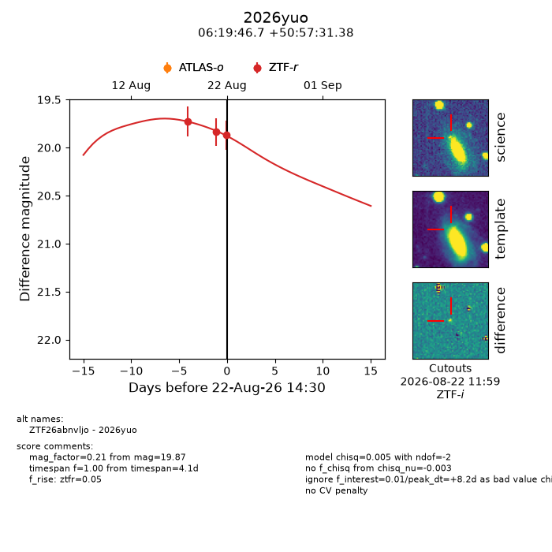
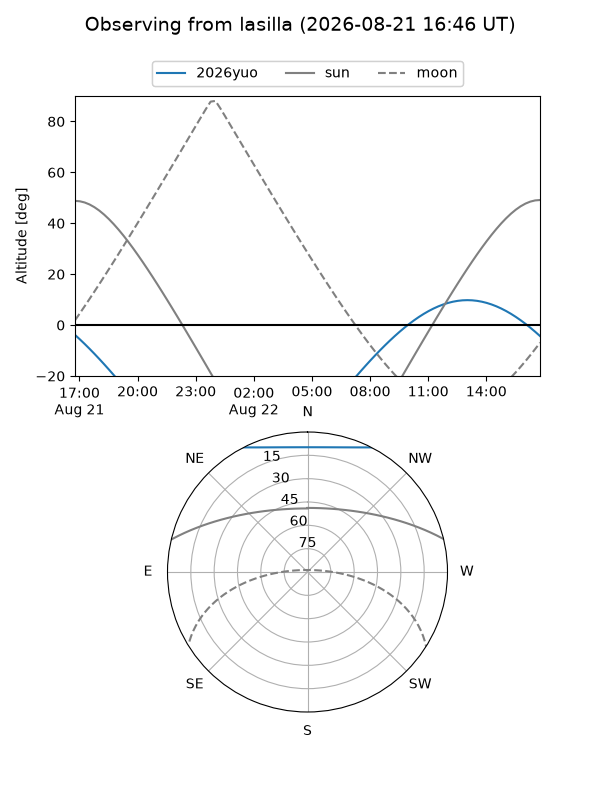
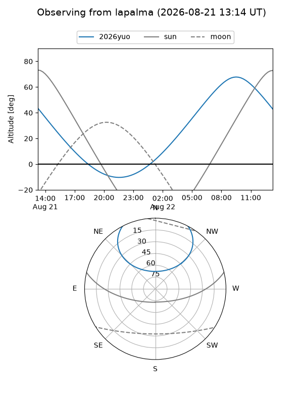
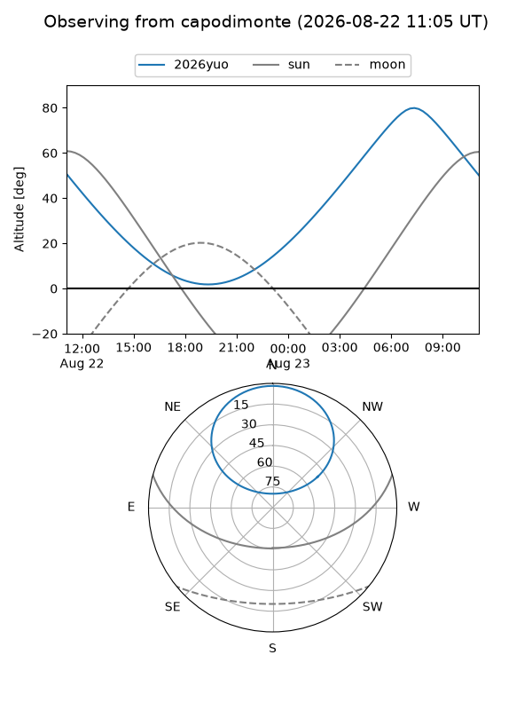
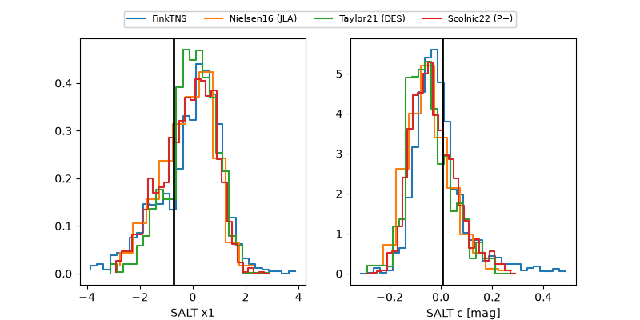

2026yuo
Target 2026yuo at 2026-08-22 14:33
Aliases and brokers:
FINK-ZTF: ztf.fink-portal.org/ZTF26abnvljo
Lasair-ZTF: lasair-ztf.lsst.ac.uk/objects/ZTF26abnvljo
ALeRCE-ZTF: alerce.online/object/ZTF26abnvljo
YSE-PZ: ziggy.ucolick.org/yse/transient_detail/2026yuo
TNS name: wis-tns.org/object/2026yuo
Direct TNS query: direct search
alt names
ZTF26abnvljo (ztf,fink_ztf)
2026yuo (tns,yse)
Coordinates:
equatorial (ra, dec) = 94.9447,+50.95872
equatorial (HMS+DMS) = 06:19:46.74,+50:57:31.38
galactic (l, b) = (163.4193,+16.07925)
Flags:
TNS type: nan
peak dt: +8.2
Photometry:
last ztfr=19.87
3 ztfr detections
Lightcurve

Visibility



Additional plots
